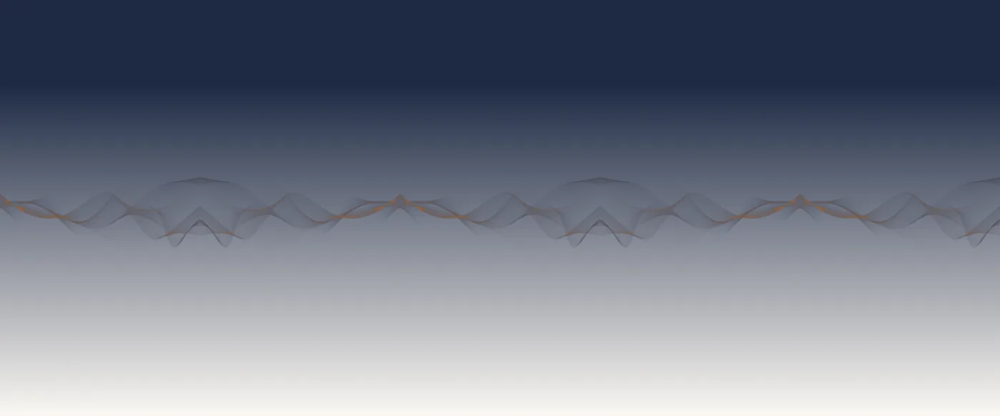

Tjenester
Sikkerhet, sky og drift.
Vi tar ansvar for at IT-en fungerer, og at den er satt opp trygt.
IT-sikkerhet
Vi bygger lagdelt sikkerhet med endepunktsikring, e-postfiltrering, passordbehandler og automatisk backup — og sikrer Microsoft 365 med tofaktor og riktige tilganger.
- 01EndepunkterBeskyttelse der dataene faktisk er.
- 02IdentitetTofaktor og tilganger som er riktige, ikke bare mange.
- 03BackupAutomatisk, og testet.

02 / Sky
Skytjenester
Microsoft 365 satt opp med tofaktor, tilganger og backup.
03 / Drift
IT-support og drift
Daglig support og proaktiv oppfølging av maskiner og brukere.
04 / Rådgivning
IT-rådgiver og AI
Råd om systemer, verktøy og fornuftig bruk av AI.

Proaktiv, ikke reaktiv
Support skal ikke bare svare når noe har stoppet. Vi følger med på maskinene, oppdateringene og sikkerhetsvarslene, og tar tak før det blir en sak.
Det gir færre avbrudd — og mer tid til det virksomheten faktisk driver med.